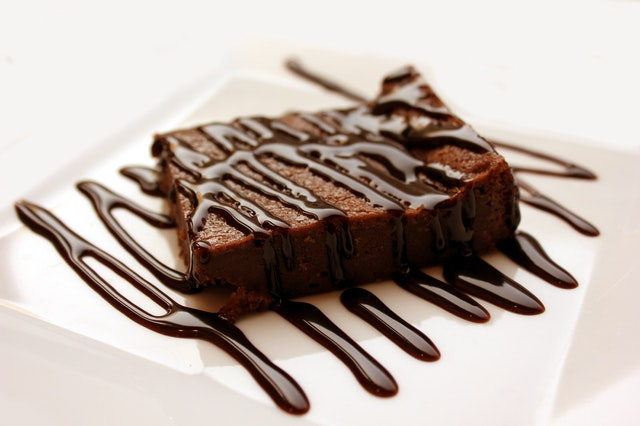
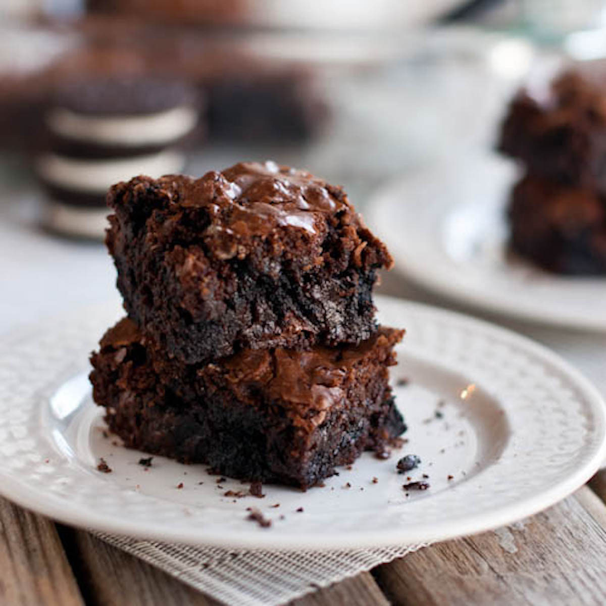

Brownie World welcomes you into the greatest land of all!
In this tutorial you will learn how to make the best brownies in simple steps.

Click on the image to begin
Preheat oven to 350 degrees F (175 degrees C). Grease and flour an 8-inch square pan.
Gather all of the necessary ingredients:
In a large saucepan, melt 1/2 cup butter. Remove from heat, and stir in sugar, eggs, and 1 teaspoon vanilla. Beat in 1/3 cup cocoa, 1/2 cup flour, salt, and baking powder. Spread batter into prepared pan.
Bake in preheated oven for 25 to 30 minutes. Do not overcook.
To Make Frosting: Combine 3 tablespoons softened butter, 3 tablespoons cocoa, honey, 1 teaspoon vanilla extract, and 1 cup confectioners' sugar. Stir until smooth. Frost brownies while they are still warm.
Thank you for taking time to visit Brownie World. We hope you come back soon to check out more of our amazing recipes!

Click on the image to start the tutorial again